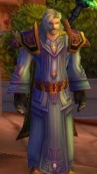

Dagarod
Age : 55
Sexe : Homme
Race : Humain
Faction : Alliance
Formation : Prêtre
Description : Né dans une riche famille du royaume d'Hurlevent, Dagarod profite d'une jeunesse heureuse, qui prendra malheureusement fin lorsqu'il avait 10 ans. Des brigands, attirés par l'immense fortune de sa famille, mirent à sac le manoir et tuèrent toute sa famille. Dagarod put fuir vers la ville d'Hurlevent.
Il fut alors attiré par la beauté de la Cathédrale de la Lumière. Les prêtres qui le virent là le placèrent à l'orphelinat. Il fut ensuite éduqué par des prêtres qui lui enseignèrent les voies de la Lumière Sacrée. A l'âge de 21 ans, il devient officiellement un prêtre du royaume d'Hurlevent.
Il parcourut les campagnes afin d'aider les autres, dans un mouvement altruiste lui venant de ses préceptes sur la Lumière.
Bien des années plus tard, lors des invasions orques, Dagarod se mis à disposition de l'armée. Il devient ainsi un prêtre de bataille. Les nombreuses blessures qu'il eût à soigner et le malheur des victimes de la guerre lui fit détester les sentiments obscurs tels que la haine et l'avidité.
Lors de l'invasion du Fléan en Lordaeron, Dagarod fut envoyé comme soutien à l'armée du Prince Arthas. Il prit part à ses premiers combats contre les morts-vivants, allant jusqu'à accompagner l'expédition du Prince en Northend.
Quittant le royaume de Lordaeron juste au moment où le Prince rentre en ville, Dagarod échappa sans le savoir au massacre. Il apprit la terrible nouvelle à son retour à Hurlevent. Il pris un détachement de combattants, parmis lesquels sa femme.
Malheureusement, sa femme fut tuée lors d'un combat et les soldats ne purent ramener son cadavre à Dagarod. Craignant le pire, il se mit en quête de la dépouille de sa femme. Lorsqu'il le retrouva, ses pires craintes s'étaient réalisées : sa femme était devenue une mort-vivante, prêtresse de l'Ombre. Dagarod l'affronta alors au cours d'un duel qui lui laissa une cicatrice sur la joue, mais surtout dans son esprit.
Prcourant désormais les diférents territoires afin d'aider les malheureux, il rencontra par hasard un homme d'âge mûr, portant tout comme lui la chevalière de sa famille. L'homme ne connaissait pas ses origines, et avait cette bague depuis toujours et avait été elevé par des parents adoptifs qui l'avaient délivré d'une bande de pillards.
Dagarod réalisa que cet homme ne pouvait être que son frère qu'il croyait mort, qu'il retrouva ainsi après 40 ans de séparation.
A ce jour, Dagarod occupe des fonctions spirituelles à Hurlevent et a officiellement pris sa "retraite militaire". Cependant, il garde toujours un oeil sur l'armée et est prêt à aider ses frères d'armes...r!
Plus d'infos sur Dagarod >>>